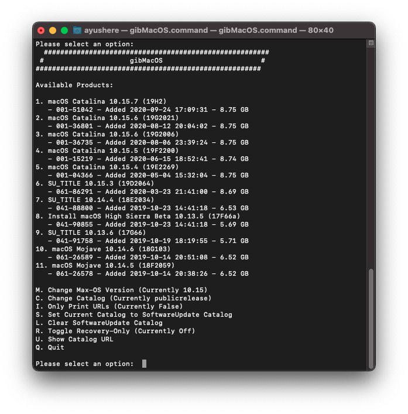

System operacyjny jest programem komputerowym, bądź zbiorem programów, który zarządza sprzętem oraz
aplikacjami komputera. Podstawą wszystkich systemów operacyjnych jest wykonywanie podstawowych zadań
takich jak: kontrolowanie i przypisywanie pamięci, ustalanie priorytetów w zadaniach, obsługa urządzeń,
ustalanie połączeń sieciowych oraz zarządzanie plikami. Większość systemów operacyjnych posiada
środowiska graficzne ułatwiające ich obsługę.

Porównanie wybranych systemów operacyjnych
OS
Kompatybilność
Cena
Windows 10
Znacząca ilość urządzeń desktopowych
ok. 450 zł wersja Home
macOS
Komputery od Apple (Mac, Macbook)
-
Linux
Znacząca ilość urządzeń desktopowych
z reguły darmowy (w zależności od dystrybucji)
Popularność systemów desktopowych pod koniec 2020 roku: